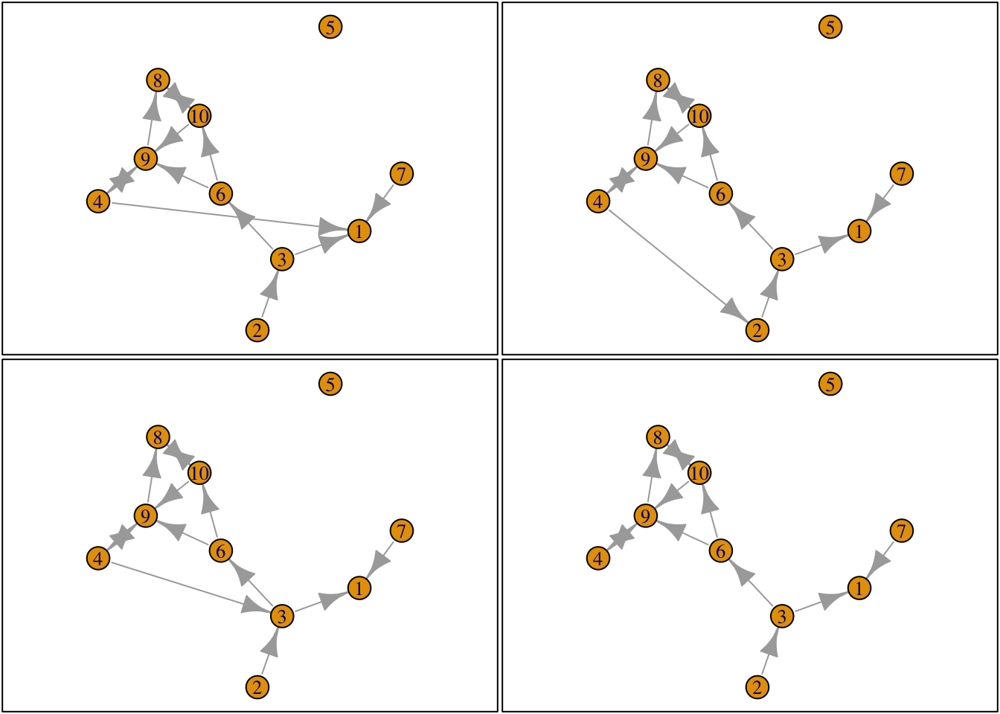
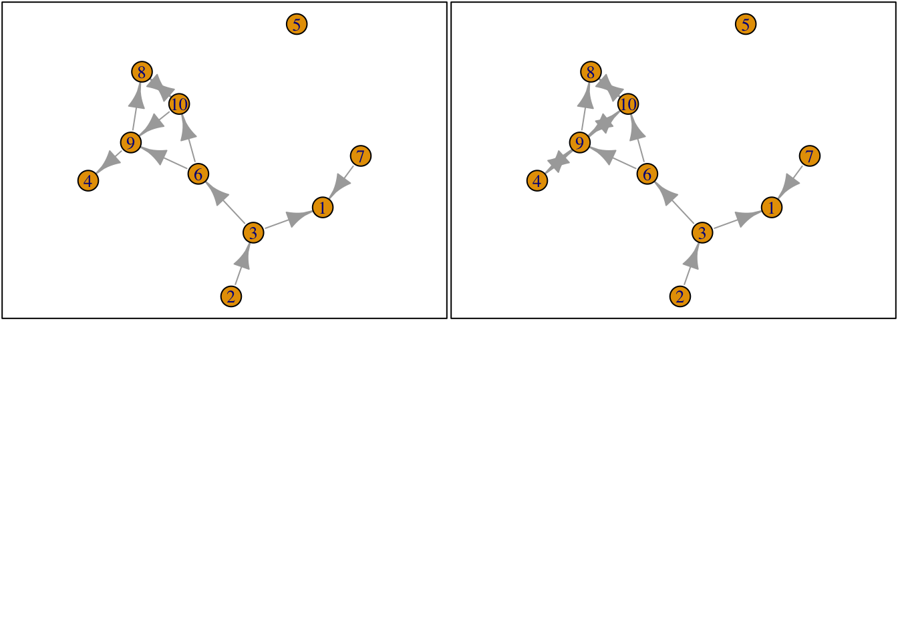

library(knitr)
library(tidyverse)
library(scholar)
library(openalexR)
library(rvest)
library(jsonlite)
library(httr)
library(rvest)
library(reshape2)
library(xml2)
library(openxlsx)
library(polite)
library(igraph)
library(sna)
library(genderizeR)
library(RSelenium)
library(netstat)
library(pingr)
library(RSiena)
library(devtools)
library(RsienaTwoStep)
#load the functions you need from the packages
fpackage.check <- function(packages) {
lapply(packages, FUN = function(x) {
if (!require(x, character.only = TRUE)) {
install.packages(x, dependencies = TRUE)
library(x, character.only = TRUE)
}
})
}
fsave <- function(x, file = NULL, location = "./data/processed/") {
ifelse(!dir.exists("data"), dir.create("data"), FALSE)
ifelse(!dir.exists("data/processed"), dir.create("data/processed"), FALSE)
if (is.null(file))
file = deparse(substitute(x))
datename <- substr(gsub("[:-]", "", Sys.time()), 1, 8)
totalname <- paste(location, datename, file, ".rda", sep = "")
save(x, file = totalname) #need to fix if file is reloaded as input name, not as x.
}
fload <- function(filename) {
load(filename)
get(ls()[ls() != "filename"])
}
fshowdf <- function(x, ...) {
knitr::kable(x, digits = 2, "html", ...) %>%
kableExtra::kable_styling(bootstrap_options = c("striped", "hover")) %>%
kableExtra::scroll_box(width = "100%", height = "300px")
}Last compiled on October, 2025
results_hold runs the complete code chunk and then shows the output. You can also make scrollable output boxes.
eval= False (then you can push stuff that doesn’t work) echo = False (something else Jochem does)
Wave 1: many isolates, because it is in the time period 2015-2019 Collected in 2022, so many people are phd students or junior researchers just entering the department in 2022, when the data was collected.
You have to take “joiners” and “leavers” into account the network is defined as being in one of the department at one of the points in our data collection network, if you joined in 2025 you’ll also be in the dataset of 2015. So you need to keep into account when they joined.
RSienna: one of the many methods to analyse a network. Developed to analyse the evolution of networks, but can also analyse static networks.
It takes an observed network at T1 and looks at how it evolves over time. The network we analyse at T2 is dependent on the network at T1. similar people will become friends depends on the network you have at T1 Your theory may also depend on what happens at T1.
All your hypothesis are tested “conditional” at T1.
The model estimates rules for agents on how to change ties and behaviour You figure out to what extent an agent likes or does not like to close a triad configuration So you figure out rules of individuals: it’s on individual level, not on macro level.
These micro rules can become so complex and are interdependent, so it’s hard to predict how micro level rules transform to macro level.
If we know the rules of these agents, we can actually simulate the networks.
You can try to get the simulated network to look like the actual network evolution.
Crucial assumption RSiena: Agents make ministeps. On actor at a time, is allowed to make one single tie change at a time.
Is not always how it works in real life: if you meet 4 people at the same time you don’t go by them one by one to see.
Additional assumptions: if a relationship is a complete failure, you break a tie, but afterwards you forget about this. It has no memories.There is also no recognition, no future seeing.
So if these mechanisms are at play, they should be measured by the ministeps. But you need to be aware that you can’t test hypotheses in which these are very important assumptions.
Now he’s created a package in which you can do more, but it does not seem that it makes a great difference.
It evaluates possible options, and then it pics the one it likes: not in a deterministic way, but a suggestive way?
# Start with a clean environment
rm(list = ls())
ts_net1## [,1] [,2] [,3] [,4] [,5] [,6] [,7] [,8] [,9] [,10]
## [1,] 0 0 0 0 0 0 0 0 0 0
## [2,] 0 0 1 0 0 0 0 0 0 0
## [3,] 1 0 0 0 0 1 0 0 0 0
## [4,] 0 0 0 0 0 0 0 0 1 0
## [5,] 0 0 0 0 0 0 0 0 0 0
## [6,] 0 0 0 0 0 0 0 0 1 1
## [7,] 1 0 0 0 0 0 0 0 0 0
## [8,] 0 0 0 0 0 0 0 0 0 1
## [9,] 0 0 0 1 0 0 0 1 0 0
## [10,] 0 0 0 0 0 0 0 1 1 0net1g <- graph_from_adjacency_matrix(ts_net1, mode = "directed")
coords <- layout_(net1g, nicely()) #let us keep the layout
par(mar = c(0.1, 0.1, 0.1, 0.1))
{
plot.igraph(net1g, layout = coords)
graphics::box()
}
Now you need to figure out who is allowed to make a ministep: for
now we assume it’s random. Mostly focus on, when they change, how do
they change?
For every actor, the number of actions are 10: it can do nothing, create a tie, or break a tie.
So there are 10 options: do nothing or do something with the 9 other actors.
# Let's say a random ego gets chosen
set.seed(24553253)
ego <- ts_select(net = ts_net1)
# We pick ego 4
# in this network, ego (ego 4) is allowed to make ministeps
# then it saves all the alternatives in the object options
options <- ts_alternatives_ministep(net = ts_net1, ego = ego)
options## [[1]]
## [,1] [,2] [,3] [,4] [,5] [,6] [,7] [,8] [,9] [,10]
## [1,] 0 0 0 0 0 0 0 0 0 0
## [2,] 0 0 1 0 0 0 0 0 0 0
## [3,] 1 0 0 0 0 1 0 0 0 0
## [4,] 1 0 0 0 0 0 0 0 1 0
## [5,] 0 0 0 0 0 0 0 0 0 0
## [6,] 0 0 0 0 0 0 0 0 1 1
## [7,] 1 0 0 0 0 0 0 0 0 0
## [8,] 0 0 0 0 0 0 0 0 0 1
## [9,] 0 0 0 1 0 0 0 1 0 0
## [10,] 0 0 0 0 0 0 0 1 1 0
##
## [[2]]
## [,1] [,2] [,3] [,4] [,5] [,6] [,7] [,8] [,9] [,10]
## [1,] 0 0 0 0 0 0 0 0 0 0
## [2,] 0 0 1 0 0 0 0 0 0 0
## [3,] 1 0 0 0 0 1 0 0 0 0
## [4,] 0 1 0 0 0 0 0 0 1 0
## [5,] 0 0 0 0 0 0 0 0 0 0
## [6,] 0 0 0 0 0 0 0 0 1 1
## [7,] 1 0 0 0 0 0 0 0 0 0
## [8,] 0 0 0 0 0 0 0 0 0 1
## [9,] 0 0 0 1 0 0 0 1 0 0
## [10,] 0 0 0 0 0 0 0 1 1 0
##
## [[3]]
## [,1] [,2] [,3] [,4] [,5] [,6] [,7] [,8] [,9] [,10]
## [1,] 0 0 0 0 0 0 0 0 0 0
## [2,] 0 0 1 0 0 0 0 0 0 0
## [3,] 1 0 0 0 0 1 0 0 0 0
## [4,] 0 0 1 0 0 0 0 0 1 0
## [5,] 0 0 0 0 0 0 0 0 0 0
## [6,] 0 0 0 0 0 0 0 0 1 1
## [7,] 1 0 0 0 0 0 0 0 0 0
## [8,] 0 0 0 0 0 0 0 0 0 1
## [9,] 0 0 0 1 0 0 0 1 0 0
## [10,] 0 0 0 0 0 0 0 1 1 0
##
## [[4]]
## [,1] [,2] [,3] [,4] [,5] [,6] [,7] [,8] [,9] [,10]
## [1,] 0 0 0 0 0 0 0 0 0 0
## [2,] 0 0 1 0 0 0 0 0 0 0
## [3,] 1 0 0 0 0 1 0 0 0 0
## [4,] 0 0 0 0 0 0 0 0 1 0
## [5,] 0 0 0 0 0 0 0 0 0 0
## [6,] 0 0 0 0 0 0 0 0 1 1
## [7,] 1 0 0 0 0 0 0 0 0 0
## [8,] 0 0 0 0 0 0 0 0 0 1
## [9,] 0 0 0 1 0 0 0 1 0 0
## [10,] 0 0 0 0 0 0 0 1 1 0
##
## [[5]]
## [,1] [,2] [,3] [,4] [,5] [,6] [,7] [,8] [,9] [,10]
## [1,] 0 0 0 0 0 0 0 0 0 0
## [2,] 0 0 1 0 0 0 0 0 0 0
## [3,] 1 0 0 0 0 1 0 0 0 0
## [4,] 0 0 0 0 1 0 0 0 1 0
## [5,] 0 0 0 0 0 0 0 0 0 0
## [6,] 0 0 0 0 0 0 0 0 1 1
## [7,] 1 0 0 0 0 0 0 0 0 0
## [8,] 0 0 0 0 0 0 0 0 0 1
## [9,] 0 0 0 1 0 0 0 1 0 0
## [10,] 0 0 0 0 0 0 0 1 1 0
##
## [[6]]
## [,1] [,2] [,3] [,4] [,5] [,6] [,7] [,8] [,9] [,10]
## [1,] 0 0 0 0 0 0 0 0 0 0
## [2,] 0 0 1 0 0 0 0 0 0 0
## [3,] 1 0 0 0 0 1 0 0 0 0
## [4,] 0 0 0 0 0 1 0 0 1 0
## [5,] 0 0 0 0 0 0 0 0 0 0
## [6,] 0 0 0 0 0 0 0 0 1 1
## [7,] 1 0 0 0 0 0 0 0 0 0
## [8,] 0 0 0 0 0 0 0 0 0 1
## [9,] 0 0 0 1 0 0 0 1 0 0
## [10,] 0 0 0 0 0 0 0 1 1 0
##
## [[7]]
## [,1] [,2] [,3] [,4] [,5] [,6] [,7] [,8] [,9] [,10]
## [1,] 0 0 0 0 0 0 0 0 0 0
## [2,] 0 0 1 0 0 0 0 0 0 0
## [3,] 1 0 0 0 0 1 0 0 0 0
## [4,] 0 0 0 0 0 0 1 0 1 0
## [5,] 0 0 0 0 0 0 0 0 0 0
## [6,] 0 0 0 0 0 0 0 0 1 1
## [7,] 1 0 0 0 0 0 0 0 0 0
## [8,] 0 0 0 0 0 0 0 0 0 1
## [9,] 0 0 0 1 0 0 0 1 0 0
## [10,] 0 0 0 0 0 0 0 1 1 0
##
## [[8]]
## [,1] [,2] [,3] [,4] [,5] [,6] [,7] [,8] [,9] [,10]
## [1,] 0 0 0 0 0 0 0 0 0 0
## [2,] 0 0 1 0 0 0 0 0 0 0
## [3,] 1 0 0 0 0 1 0 0 0 0
## [4,] 0 0 0 0 0 0 0 1 1 0
## [5,] 0 0 0 0 0 0 0 0 0 0
## [6,] 0 0 0 0 0 0 0 0 1 1
## [7,] 1 0 0 0 0 0 0 0 0 0
## [8,] 0 0 0 0 0 0 0 0 0 1
## [9,] 0 0 0 1 0 0 0 1 0 0
## [10,] 0 0 0 0 0 0 0 1 1 0
##
## [[9]]
## [,1] [,2] [,3] [,4] [,5] [,6] [,7] [,8] [,9] [,10]
## [1,] 0 0 0 0 0 0 0 0 0 0
## [2,] 0 0 1 0 0 0 0 0 0 0
## [3,] 1 0 0 0 0 1 0 0 0 0
## [4,] 0 0 0 0 0 0 0 0 0 0
## [5,] 0 0 0 0 0 0 0 0 0 0
## [6,] 0 0 0 0 0 0 0 0 1 1
## [7,] 1 0 0 0 0 0 0 0 0 0
## [8,] 0 0 0 0 0 0 0 0 0 1
## [9,] 0 0 0 1 0 0 0 1 0 0
## [10,] 0 0 0 0 0 0 0 1 1 0
##
## [[10]]
## [,1] [,2] [,3] [,4] [,5] [,6] [,7] [,8] [,9] [,10]
## [1,] 0 0 0 0 0 0 0 0 0 0
## [2,] 0 0 1 0 0 0 0 0 0 0
## [3,] 1 0 0 0 0 1 0 0 0 0
## [4,] 0 0 0 0 0 0 0 0 1 1
## [5,] 0 0 0 0 0 0 0 0 0 0
## [6,] 0 0 0 0 0 0 0 0 1 1
## [7,] 1 0 0 0 0 0 0 0 0 0
## [8,] 0 0 0 0 0 0 0 0 0 1
## [9,] 0 0 0 1 0 0 0 1 0 0
## [10,] 0 0 0 0 0 0 0 1 1 0# make plots of the different options
plots <- lapply(options, graph_from_adjacency_matrix, mode = "directed")
par(mar = c(0, 0, 0, 0) + 0.1)
par(mfrow = c(2, 2))
fplot <- function(x) {
plot.igraph(x, layout = coords, margin = 0)
graphics::box()
}
lapply(plots, fplot)
## [[1]]
## NULL
##
## [[2]]
## NULL
##
## [[3]]
## NULL
##
## [[4]]
## NULL
##
## [[5]]
## NULL
##
## [[6]]
## NULL
##
## [[7]]
## NULL
##
## [[8]]
## NULL
##
## [[9]]
## NULL
##
## [[10]]
## NULL
It is not plausible that someone can take into account all these options and choose. So you need to have rules which are at play.
A possible rule: I want to make a tie if it is not present. This means every tie is evaluated positively.
You can then per network count how many ties 4 has: and you want as many ties possible. The cases in which 4 gets two ties are favoured more than the one in which 4 has 1 or 0. We count the statistic for every network, and pick the one which is best.
Another possible rule: Preference for reciprocated ties.
You can combine those two statistics (rules): then you need to add a value to the statistic: is degree more important or reciprocity more important? > parameters
We are going to estimate the parameters with Rsiena: the model will spit out: how important is the reciprocity parameter?
# Let us count the number of ties ego sends to alters.
ts_degree(net = options[[1]], ego = ego)## [1] 2# Count this for all options
sapply(options, ts_degree, ego = ego)## [1] 2 2 2 1 2 2 2 2 0 2# reciprocated ties
sapply(options, ts_recip, ego = ego)## [1] 1 1 1 1 1 1 1 1 0 1For each network, calculate the statistic, multiply it by the value, do that for all statistics, and then add them to each other. and pick the one with the highest number. If there are several with the highest number: pick them randomly.
The formula basically states:
For actor(i) take their network, for their network we calculate the statistic k and we multiply it by the importance for that statistic and sum those.
# lets say: the statistic ‘degree’ is -1 and the statistic ‘reciprocity’ is 1.5.
option <- 4
ts_degree(options[[option]], ego = ego) * -1 + ts_recip(options[[option]], ego = ego) * 1.5## [1] 0.5# or use the evaluation function
Copyeval <- ts_eval(net = options[[option]], ego = ego, statistics = list(ts_degree, ts_recip), parameters = c(-1, 1.5))
eval## function (expr, envir = parent.frame(), enclos = if (is.list(envir) ||
## is.pairlist(envir)) parent.frame() else baseenv())
## .Internal(eval(expr, envir, enclos))
## <bytecode: 0x1569198e0>
## <environment: namespace:base># Now, let us calculate the evaluation of all possible networks:
eval <- sapply(options, FUN = ts_eval, ego = ego, statistics = list(ts_degree, ts_recip), parameters = c(-1,
1.5))
eval## [1] -0.5 -0.5 -0.5 0.5 -0.5 -0.5 -0.5 -0.5 0.0 -0.5print("network with maximum evaluation score:")## [1] "network with maximum evaluation score:"which.max(eval)## [1] 4Now we need to force people to choose: take the exponent of that score and compare it by the total of all the option: you get a probability of that choice being chosen. It does not pick the option with the highest probability score, that would make it deterministic, but it’s not. Because of the stoactic element, you can get to more realistic network structures.
We sample from all our options (which were saved in eval), we can only take one option (size = 1), and we weigh these options based on their probability.
choice <- sample(1:length(eval), size = 1, prob = exp(eval)/sum(exp(eval)))
print("choice:")## [1] "choice:"choice## [1] 10Now, we can repeat this process many times. But eventually you need it to stop.
Need agent based modeling for this. We need to have a stopping rule.
But we are not interested in simulating, we want to estimate stuff:
If you say degree is more important, this will also impact the reciprocity degree, they are interdependent so you need to look at those parameters. This is the logic, you don’t do this yourself: you can use Rsiena for that and mongrows algorithm to get it there.
It is not about: did I get the specific ties correct, but more about did i get the degree correct. We are predicted at the aggregated statistics level. YOu can make it more alike by putting in more specific rules: people aged 40 and older create less ties…
rate <- 2
degree <- -1
recip <- 1.5
#ts_sims(nsims = 1, net = ts_net1, startvalues = c(rate, degree, recip), statistics = list(ts_degree,
# ts_recip), p2step = c(1, 0, 0), chain = FALSE) #not that rate parameter is automatically included.
# we do not calculate SE for now.
#ans <- ts_estim(net1 = s501, net2 = s502, statistics = list(ts_degree, ts_recip), p2step = c(1, 0, 0),
# conv = 0.01, phase3 = TRUE, itef3 = 50, verbose = TRUE)Based on the output seen here below, you can interpret it.
Assuming my object of interest increased with 1 then the probability is the exponent of your parameter the log probability is your parameter of interest.
The exp(-2.25): the probability to have one tie instead of none is 0.10. This estimate will be very close to the density of our network. If the probability of sending a tie to not sending a tie is 1: then you get 0.5 (in most network the densitiy is below 0, smaller than 0.5)
The higher the score: the more positive, the more we like the statistic, the higher the probability, the more likely. You can also compare estimate sizes to each other.
#> estim SE
#> rate 5.122247 1.1833275
#> degree -2.258332 0.1371387
#> recip 2.428552 0.2102846You need to be specific: is your hypothesis on the ego level (like your model is: estimates are on the micro level) or a the network level? In the second case you need to take other steps (next week).
For your final assignment you need to explain the estimates, say which ones are bigger
By the way: The ministeps are not observed, we observe network at T1 and at T2 and between them are ministeps (unobserved), if we did have the ministeps we could use different models: because then you can analyse the ministeps, you’d need timestamped data (we have that in our data beacuse the publications are dated (but those are messy because it does not include the start of the process etc.))
In the package RsienaTwoStep there are functions for the following network statistics:
degree: ts_degree()
reciprocity: ts_recip()
outdegree activity: ts_outAct()
indegree activity: ts_inAct()
outdegree popularity: ts_outPop()
indegree popularity: ts_inPop()
transitivity: ts_transTrip()
mediated transitivity: ts_transMedTrip()
transitive reciprocated triplets: ts_transRecTrip()
number of three-cycles: ts_cycle3()